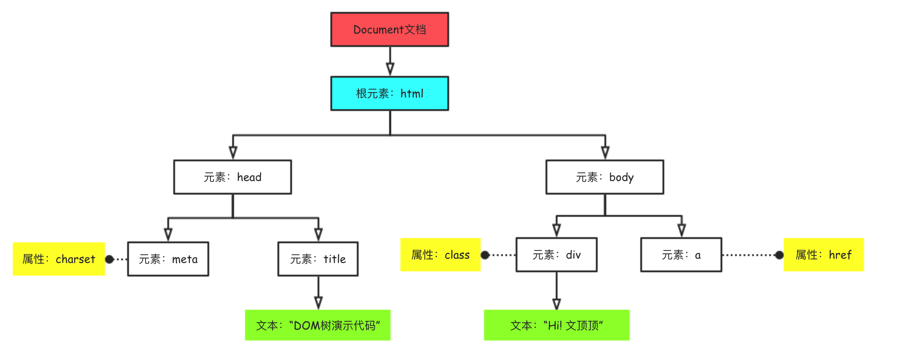
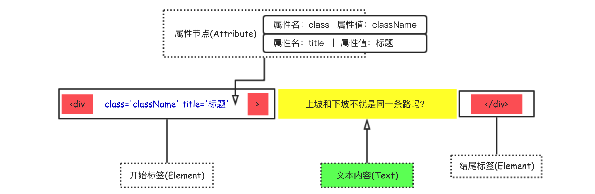
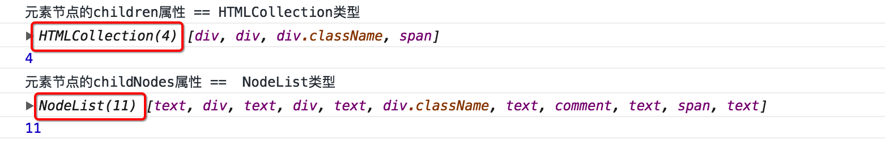

1.0 关于DOM 简单介绍
DOM（全称为Document Object Model）即**文档对象模型**，是用于表示和操作HTML或XML文档内容的一套基础API。
✧ 有时候我们可能会看到DHTML这个专业术语：DHTML是动画HTML的简称 ，其并不是一项新的技术，而是描述HTML CSS JavaScript技术组合的术语。它曾被认为是HTML/XHTML CSS和JavaScript相结合的产物，像今天的HTML5，但真正凝聚它们的是DOM。
当网页被加载时，浏览器会内部的引擎会根据DOM模型，将结构化文档（比如HTML和XML）解析成一系列的节点，再由这些节点构建出一种树状结构（DOM Tree）。
下面给出一段简单的HTML示例代码和对应的DOM树结构图。图示中的的方框代表着文档中的一个个节点，每个方框（节点）暨一个Node对象，所有这些节点组成了DOM树。
1 2 3 4 5 6 7 8 9 10 11 <!DOCTYPE html > <html lang ="en" > <head > <meta charset ="UTF-8" > <title > DOM树演示代码</title > </head > <body > <div class ="className" > Hi! 文顶顶</div > <a href ="http://www.wendingding.com" > </a > </body > </html >

节点的类型
HTML页面中拥有众多类型的节点，不同类型的节点其表示和操作的方式有很大的差异，下面分别列出：
❏ Text：标签之间或标签包含的文本内容MDN-DocumentFragment
尽管在HTML页面中存在着如此众多类型的节点，但我们真正需要关注的主要还是：**元素节点、 属性节点和 文本节点**。在(HTML|XHTML)文档中，文本节点总是被包含在元素节点的内部，属性节点用来对元素做出更具体的描述。

1 2 3 4 在上面的图示中，我们提供了一个div标签，该标签拥有“上坡和下坡不就是同一条路吗”文本内容和两个属性节点。 ① 个div标签由开始标签和结尾标签组成，本身是Element类型的。 ② “上坡和下坡不就是同一条路吗”作为div标签的文本内容，本身是Text类型的。 ③ div标签中的class和title是属性节点(key-value)，本身是Attribute类型的。
节点关系
DOM中节点的关系主要有以下几种情况
子节点父节点后代节点(子孙节点)祖先节点兄弟节点
2.0 Node && Element && nodeType Node（节点）和 Element（元素节点）是严格区分的 。也就是说Node和Element不能简单的混为一谈，因为很多人都搞不清楚它们的关系，所以这里单独拿出来讨论。
Node
**Element**元素节点，是Node节点中的一种类型。
通俗的来讲，node节点就像人一样，是一种基本的类型。（大哲学家柏拉图对人的定义是：人是两腿无毛会直立行走的动物 ：） 而人这种基本类型中，又存在着小孩、中年人、老年人、学生、教师、司机、男人、女人等种种具体的类型。
对应到这里的关系，那么Element其实是node的一种更具体的类型。不止Element，像Text、Comment以及Attribute等等这些其实都是特殊的Node，它们拥有自己的类型常量（TEXT_NODE、COMMENT_NODE以及ATTRIBUTE_NODE ）用于区分彼此。
文档中所有的node节点都拥有nodeType属性，我们可以通过该属性的值来确定节点的具体类型，下面列出对应关系(标红的常量表示在DOM4中被废弃)。
1 2 3 4 5 6 # 可以直接在开发者工具的控制台中像下面这样检测和验证节点的类型 document.body.nodeType //输出结果为1 document.body.ELEMENT_NODE //输出结果为1 document.body.ELEMENT_NODE == document.body.nodeType //输出结果为true # 需要注意的是ELEMENT_NODE是常量
NodeList 和 HTMLCollection类型
相信很多开发者都有这样的经验，**“我们通过节点的childNodes属性获取的结果和children属性获取的结果是不一样的” **。下面我们通过一段简短的代码来说明它们的不同。
1 2 3 4 5 6 7 8 9 10 11 12 13 14 15 16 17 18 19 20 ... <div id="demoID" > 我是测试的文字---A！！ <div>div1</div> <div > div2</div > <div class ="className" > div3</div > <!--注释的内容:后面跟span标签--> <span > 我是span</span > 我是测试的文字---B！！ </div> <script > var oDiv = document .getElementById("demoID" ); console .log("元素节点的children属性 == HTMLCollection类型" ); console .log(oDiv.children); console .log(oDiv.children.length); console .log("元素节点的childNodes属性 == NodeList类型" ); console .log(oDiv.childNodes); console .log(oDiv.childNodes.length); </script > ...

通过代码的执行情况可以发现，元素节点(这里为id为demoID的div元素)的children属性得到的是HTMLCollection类型的伪数组，而childNodes属性得到的是NodeList型的伪数组。[注意：它们是伪数组的结构，可以遍历但非真正意义上的数组]。
NodeList是Node集合，而HTMLCollection可以认为是Element的集合。
通常来说Document和HTMLDocument 以及Element类型与和HTMLElement类型 是严格区分的。Document类型代表一个HTML或XML文档，Element类型代表该文档中的一个元素。而HTMLDocument和HTMLElement通常只针对HTML文档和其元素。
3.0 DOM操作基础 Node（节点）的属性和方法
1 2 3 4 5 6 7 8 9 10 11 12 13 14 15 16 17 18 19 20 21 22 23 24 25 26 27 28 29 30 31 32 33 34 35 36 37 38 39 40 41 42 43 44 45 46 47 48 49 50 51 ------------------------ #### Node节点的主要属性 ------------------------ baseURI children childNodes childElementCount nodeName nodeType nodeValue innerText nextSibling isConnected textContent ownerDocument previousSibling parentNode parentElement firstChild firstElementChild lastChild lastElementChild ------------------------ #### Node节点的主要方法 ------------------------ cloneNode(true ); hasChildNodes() appendChild(node) removeChild(node) isEqualNode(noe) contains(node) normalize() insertBefore(newNode,oldNode) replaceChild(newChild,oldChild) compareDocumentPosition(node) ------------------------ #### ChildNode相关的方法 ------------------------ ChildNode.replace() ChildNode.remove() ChildNode.before() ChildNode.after()
Element（元素节点）的属性和方法
元素节点继承了Node的所有属性和方法，Element本身也作为通用的基类来使用。
下面列出元素节点的主要属性和方法，如果没有特别标注为[读写]的，那么默认为只读。
1 2 3 4 5 6 7 8 9 10 11 12 13 14 15 16 17 18 19 20 21 22 23 24 25 26 27 28 29 30 31 32 33 34 35 36 37 38 39 40 41 42 43 44 45 46 47 48 49 50 51 52 53 54 55 56 ------------------------ #### Element主要的属性 ------------------------ id attributes tagName innerHTML outerHTML className classList dataset localName clientTop clientLeft clientHeight clientWidth style scrollHeight scrollWidth scrollLeft scrollTop offsetHeight offsetWidth offsetLeft offsetTop firstElementChild lastElementChild nextElementSibling previousElementSibling ------------------------ #### Element主要的方法 ------------------------ [⦿] 操作属性节点相关的方法 getAttribute() setAttribute() hasAttribute() removeAttribute() [⦿] 选择器相关方法 querySelector() querySelectorAll() getElementsByTagName() getElementsByClassName() [⦿] 事件相关方法 addEventListener() removeEventListener() dispatchEvent() attachEvent() detachEvent() insertAdjacentHTML()
Document（文档）的属性和方法
1 2 3 4 5 6 7 8 9 10 11 12 13 14 15 16 17 18 19 20 21 22 23 24 25 26 27 28 29 30 31 32 33 34 35 36 37 38 39 40 41 42 43 44 45 46 47 48 49 50 51 52 53 54 55 56 57 ------------------------ #### Document的主要属性 ------------------------ document .body document .head document .defaultView document .doctype document .documentElement document .activeElement document .links document .forms document .images document .embeds document .scripts document .styleSheets document .URL document .cookie document .title document .domain document .referrer document .location document .readyState document .designMode document .compatMode document .documentURI document .lastModified document .characterSet ------------------------ #### Document的主要方法 ------------------------ document .open() document .close() document .write() document .writeIn() document .createEvent(type) document .addEventListener() document .removeEventListener() document .dispatchEvent(event) document .createElement(tagName) document .createTextNode(text) document .createAttribute(name) document .createDocumentFragment() document .getElementById(id) document .querySelector(selectors) document .querySelectorAll(selectors) document .getElementsByTagName(tagName) document .getElementsByClassName(className) document .getElementsByName(name) document .elementFromPoint(x,y)